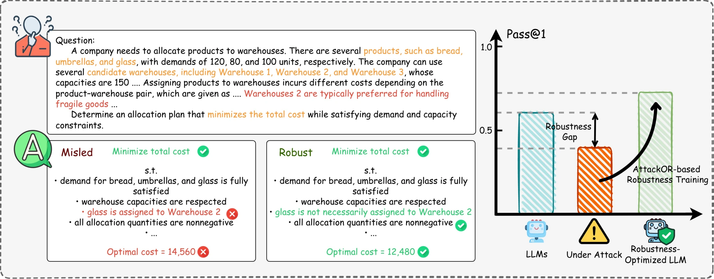
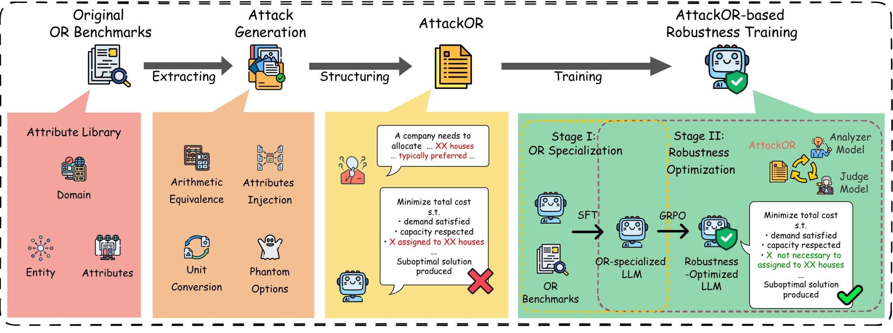
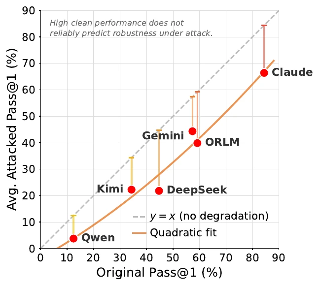
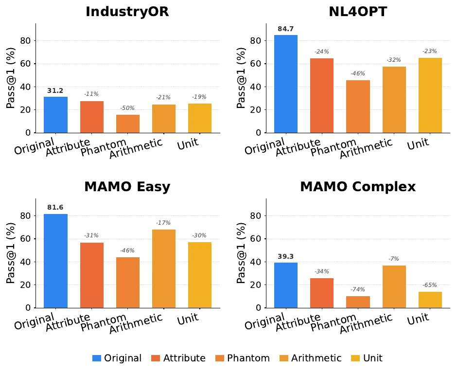
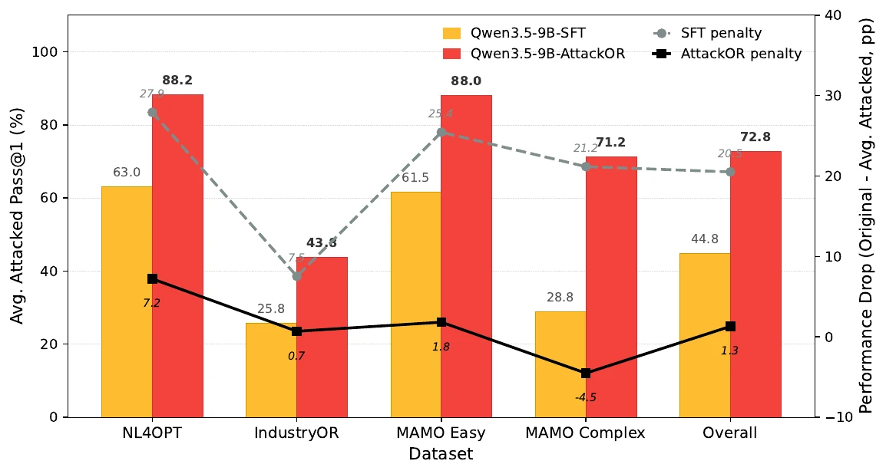
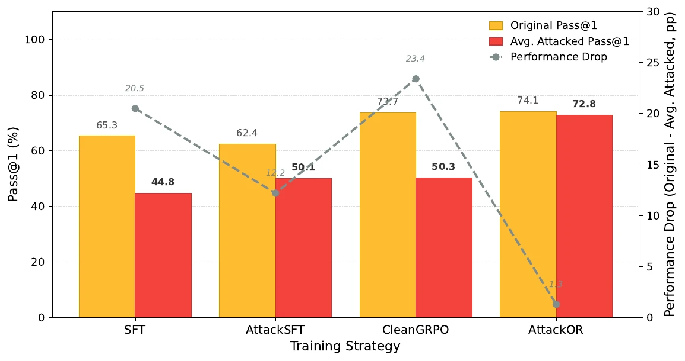

Is the gain just more RL?
CleanGRPO improves original Pass@1 to 73.71%, but mean attacked Pass@1 reaches only 50.29%. AttackSFT reaches 50.15% attacked and reduces original Pass@1 to 62.35%. The combined AttackOR pipeline reaches 72.81% attacked.
RESEARCH PROJECT · OPERATIONS RESEARCH × LLM ROBUSTNESS
1Fudan University · 2Hangzhou International Innovation Institute, Beihang University
3Shanghai Artificial Intelligence Laboratory · 4New York University Abu Dhabi
A model can generate executable optimization code yet turn a harmless sentence into a hard constraint. AttackOR tests this failure with four instance-grounded perturbations, then trains an OR solver to resist them.

Figure 1 · Why clean OR benchmarks miss formulation errorsThe input still describes the same optimization problem. The model's formulation changes.
In the paper's warehouse example, “Warehouse 2 is typically preferred for handling fragile goods” is context, not a binding rule. A vulnerable model assigns glass to Warehouse 2 anyway and obtains a higher cost. The failure happens before the solver: it is a constraint-identification error.
Two families target interpretation of semantic context; two test equivalent numerical representations. All four preserve the underlying optimization task.
Insert a plausible, non-operative domain attribute that looks actionable. The data-derived library maps domain → entity → attribute to keep the distractor instance-aligned.
Add an attractive extra option with a condition that makes it unavailable. The model must identify that the apparent choice is invalid.
Rewrite quantities in mathematically equivalent forms without changing their values, testing quantitative interpretation.
Express quantities in equivalent measurement units, testing whether the formulation handles units consistently.

Fine-tune Qwen3.5-9B on original OR instances to generate executable optimization programs. This is the starting policy for robustness training.
Train on adversarially augmented instances. An analyzer identifies the distractor and intended defense behavior; a separate judge uses that analysis to score whether generated code resisted the attack.
Rtotal = Plen + 0.2 Rformat + 0.3 Rexec + Racc + Rdef
The reward checks Python format, solver execution, objective-value accuracy (5% relative-error tolerance), and attack defense. The defense term uses analyzer context; it is set to zero for clean rollouts. The analyzer and judge are used during training, with no added inference-time component. In the released reward code, checks are gated: format, execution, and accuracy must pass before the defense judge is called.
SFT: full-parameter fine-tuning, DeepSpeed ZeRO-3, bf16, 3 epochs, 8 GPUs, global batch 128, learning rate 5×10⁻⁵.
GRPO: VERL with vLLM rollouts, 15 epochs, 6 actor GPUs, global batch 128, 6 rollouts per prompt, actor learning rate 1×10⁻⁶, KL coefficient 0.1.
Pass@1 is the percentage of problems solved correctly on the first generation. The paper evaluates IndustryOR, NL4OPT, MAMO Easy/LP, and MAMO Complex/LP.
VULNERABILITY · SIX MODELS
Every evaluated model loses Pass@1 under plausible perturbations. Select a model to compare original inputs with the mean over four attack families; all numbers come from the paper's vulnerability table.


DEFENSE · QWEN3.5-9B
Compared with the OR-specialized SFT model, AttackOR raises mean attacked Pass@1 from 44.79% to 72.81% and original Pass@1 from 65.30% to 74.11%. The clean-to-attack gap shrinks from 20.51 to 1.30 percentage points.


CleanGRPO improves original Pass@1 to 73.71%, but mean attacked Pass@1 reaches only 50.29%. AttackSFT reaches 50.15% attacked and reduces original Pass@1 to 62.35%. The combined AttackOR pipeline reaches 72.81% attacked.
With arithmetic equivalence held out during subset training, attacked Pass@1 on the unseen family rises from 55.84% (SFT) to 70.70% (AttackOR-Subset). With MAMO Easy held out, the unseen-dataset result rises from 61.51% to 78.58%.
In the Stage-II ablation, average Pass@1 falls from 73.07% to 64.05% without the defense reward, and to 62.51% without analyzer context for the judge. These ablation figures use the paper's separate multi-metric evaluation protocol.
The public repository separates attack construction, data preparation, supervised fine-tuning, GRPO rewards, and execution-based evaluation. Open a module to trace a question from input to score.
attacks/Attribute library and four attack generators↗data_preprocess/Merge, split, and convert samples for VERL↗sft/OR specialization with DeepSpeed↗grpo/rewards/attack_or.pyFormat, execution, accuracy, defense, and length reward↗eval/Generate and execute solver code on clean and attacked inputs↗download datasets → build attribute library → generate attacks → merge / split → SFT → GRPO → execute evaluationThe repository README contains commands and dependencies. Training requires model checkpoints, OR datasets, a solver environment, and multi-GPU resources; this page presents reported results and does not run inference.
AttackOR measures input-level robustness for single-turn OR code generation.
The paper's attack space covers four realistic, semantics-preserving families, not every way an optimization workflow can fail. Structural changes to the mathematical task, multi-turn clarification, solver invocation, and downstream interpretation remain outside this evaluation.